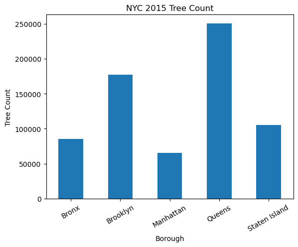
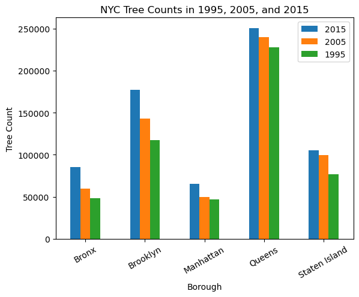
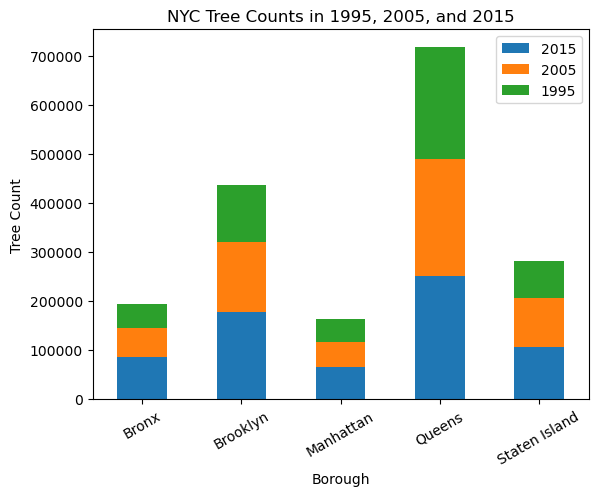
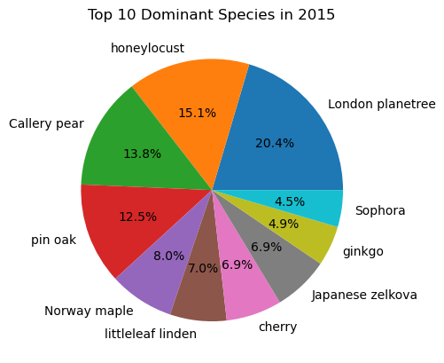
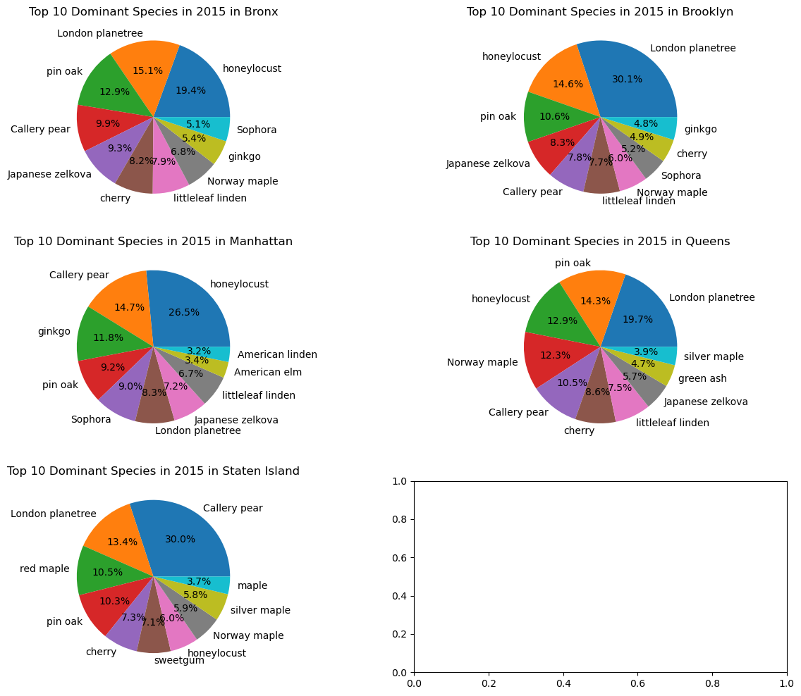
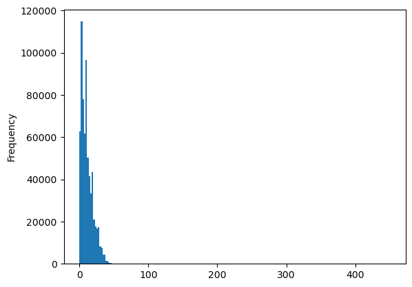
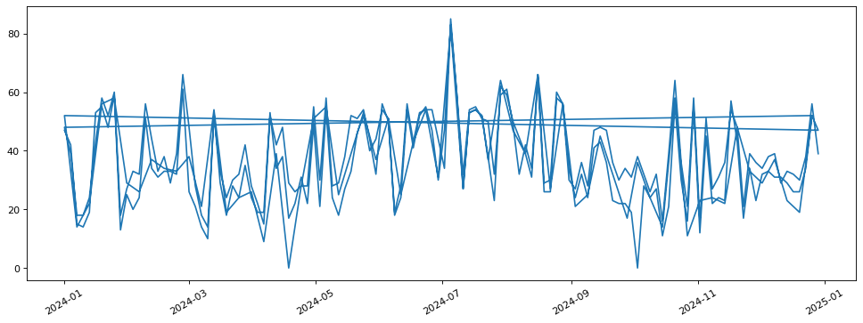

Week 6 Homework#
Exercise #1#
Use the 2015, 2005, and 1995 tree data,
Plot the bar chart of total tree counts by borough for 2015, 2005, 1995
Plot the pie chart of the top ten species for 2015 in each borough
plot histograms of tree_dbh for 2015, 2005, and 1995
# Importing packages
import pandas as pd
import matplotlib.pyplot as plt
tree2015 = pd.read_csv('../05/data/2015_Street_Tree_Census.csv')
tree2005 = pd.read_csv('../05/data/2005_Street_Tree_Census.csv')
tree1995 = pd.read_csv('../05/data/1995_Street_Tree_Census.csv')
C:\Users\Wenge\AppData\Local\Temp\ipykernel_47916\1646282599.py:2: DtypeWarning: Columns (37) have mixed types. Specify dtype option on import or set low_memory=False.
tree2005 = pd.read_csv('../05/data/2005_Street_Tree_Census.csv')
tree2015.columns
Index(['tree_id', 'block_id', 'created_at', 'tree_dbh', 'stump_diam',
'curb_loc', 'status', 'health', 'spc_latin', 'spc_common', 'steward',
'guards', 'sidewalk', 'user_type', 'problems', 'root_stone',
'root_grate', 'root_other', 'trunk_wire', 'trnk_light', 'trnk_other',
'brch_light', 'brch_shoe', 'brch_other', 'address', 'postcode',
'zip_city', 'community board', 'borocode', 'borough', 'cncldist',
'st_assem', 'st_senate', 'nta', 'nta_name', 'boro_ct', 'state',
'latitude', 'longitude', 'x_sp', 'y_sp', 'council district',
'census tract', 'bin', 'bbl'],
dtype='object')
tree1995.columns
Index(['RecordId', 'Address', 'House_Number', 'Street', 'Postcode_Original',
'Community Board_Original', 'Site', 'Species', 'Diameter', 'Condition',
'Wires', 'Sidewalk_Condition', 'Support_Structure', 'Borough', 'X', 'Y',
'Longitude', 'Latitude', 'CB_New', 'Zip_New', 'CensusTract_2010',
'CensusBlock_2010', 'NTA_2010', 'SegmentID', 'Spc_Common', 'Spc_Latin',
'Location', 'Council District', 'BIN', 'BBL'],
dtype='object')
tree2005.loc[tree2005.borocode == 5, 'boroname'] = 'Staten Island'
tree2005[tree2005.borocode == 5].boroname
429490 Staten Island
429508 Staten Island
429574 Staten Island
429676 Staten Island
429872 Staten Island
...
592367 Staten Island
592368 Staten Island
592369 Staten Island
592370 Staten Island
592371 Staten Island
Name: boroname, Length: 99701, dtype: object
# Number of tree counts by species
# treecounts = tree2015.groupby('spc_common').size()
tree2015.groupby('borough').size().plot.bar(title = 'NYC 2015 Tree Count')
plt.xticks(rotation = 30, horizontalalignment = 'center')
plt.xlabel('Borough')
plt.ylabel('Tree Count')
Text(0, 0.5, 'Tree Count')

# create a df to include all tree counts
treecount = pd.DataFrame({
'2015': tree2015.groupby('borough').size(),
'2005': tree2005.groupby('boroname').size(),
'1995': tree1995.groupby('Borough').size()}
)
treecount
| 2015 | 2005 | 1995 | |
|---|---|---|---|
| Bronx | 85203 | 59925 | 48487 |
| Brooklyn | 177293 | 142852 | 117101 |
| Manhattan | 65423 | 49886 | 47215 |
| Queens | 250551 | 240008 | 227552 |
| Staten Island | 105318 | 99701 | 76634 |
treecount.plot(kind = 'bar')
plt.xticks(rotation = 30, horizontalalignment = 'center')
plt.title('NYC Tree Counts in 1995, 2005, and 2015')
plt.xlabel('Borough')
plt.ylabel('Tree Count')
Text(0, 0.5, 'Tree Count')

treecount.plot(kind = 'bar', stacked = True)
plt.xticks(rotation = 30, horizontalalignment = 'center')
plt.title('NYC Tree Counts in 1995, 2005, and 2015')
plt.xlabel('Borough')
plt.ylabel('Tree Count')
Text(0, 0.5, 'Tree Count')

# find the top 10 dominant species
treecount2015 = tree2015.groupby('spc_common').size()
treecount2015_sorted = treecount2015.sort_values(ascending=False)
treecount2015_sorted[0:10]
# pie chart for top ten dominant species
treecount2015_sorted[0:10].plot.pie(autopct='%1.1f%%', title ='Top 10 Dominant Species in 2015')
<Axes: title={'center': 'Top 10 Dominant Species in 2015'}>

fig, axes = plt.subplots(3, 2, figsize=(15, 12))
tree2015[tree2015.borough =='Bronx'].groupby('spc_common').size().sort_values(ascending=False)[0:10].plot.pie(autopct='%1.1f%%', title ='Top 10 Dominant Species in 2015 in Bronx',ax=axes[0, 0])
tree2015[tree2015.borough =='Brooklyn'].groupby('spc_common').size().sort_values(ascending=False)[0:10].plot.pie(autopct='%1.1f%%', title ='Top 10 Dominant Species in 2015 in Brooklyn',ax=axes[0, 1])
tree2015[tree2015.borough =='Manhattan'].groupby('spc_common').size().sort_values(ascending=False)[0:10].plot.pie(autopct='%1.1f%%', title ='Top 10 Dominant Species in 2015 in Manhattan',ax=axes[1, 0])
tree2015[tree2015.borough =='Queens'].groupby('spc_common').size().sort_values(ascending=False)[0:10].plot.pie(autopct='%1.1f%%', title ='Top 10 Dominant Species in 2015 in Queens',ax=axes[1, 1])
tree2015[tree2015.borough =='Staten Island'].groupby('spc_common').size().sort_values(ascending=False)[0:10].plot.pie(autopct='%1.1f%%', title ='Top 10 Dominant Species in 2015 in Staten Island',ax=axes[2, 0])
<Axes: title={'center': 'Top 10 Dominant Species in 2015 in Staten Island'}>

tree2015['tree_dbh'].plot(kind='hist', bins=200)
#tree2015.plot(kind='hist, column='tree_dbh', bins=200)
<Axes: ylabel='Frequency'>

Exercise #2#
Use EPA AQI data to compare the air quality (AQI) for the five boroughs
pm25_daily_2024= pd.read_csv('https://aqs.epa.gov/aqsweb/airdata/daily_88101_2024.zip', parse_dates=['Date Local'])
---------------------------------------------------------------------------
KeyboardInterrupt Traceback (most recent call last)
Cell In[13], line 1
----> 1 pm25_daily_2024= pd.read_csv('https://aqs.epa.gov/aqsweb/airdata/daily_88101_2024.zip', parse_dates=['Date Local'])
File ~\miniforge3\envs\sds\Lib\site-packages\pandas\io\parsers\readers.py:1026, in read_csv(filepath_or_buffer, sep, delimiter, header, names, index_col, usecols, dtype, engine, converters, true_values, false_values, skipinitialspace, skiprows, skipfooter, nrows, na_values, keep_default_na, na_filter, verbose, skip_blank_lines, parse_dates, infer_datetime_format, keep_date_col, date_parser, date_format, dayfirst, cache_dates, iterator, chunksize, compression, thousands, decimal, lineterminator, quotechar, quoting, doublequote, escapechar, comment, encoding, encoding_errors, dialect, on_bad_lines, delim_whitespace, low_memory, memory_map, float_precision, storage_options, dtype_backend)
1013 kwds_defaults = _refine_defaults_read(
1014 dialect,
1015 delimiter,
(...) 1022 dtype_backend=dtype_backend,
1023 )
1024 kwds.update(kwds_defaults)
-> 1026 return _read(filepath_or_buffer, kwds)
File ~\miniforge3\envs\sds\Lib\site-packages\pandas\io\parsers\readers.py:620, in _read(filepath_or_buffer, kwds)
617 _validate_names(kwds.get("names", None))
619 # Create the parser.
--> 620 parser = TextFileReader(filepath_or_buffer, **kwds)
622 if chunksize or iterator:
623 return parser
File ~\miniforge3\envs\sds\Lib\site-packages\pandas\io\parsers\readers.py:1620, in TextFileReader.__init__(self, f, engine, **kwds)
1617 self.options["has_index_names"] = kwds["has_index_names"]
1619 self.handles: IOHandles | None = None
-> 1620 self._engine = self._make_engine(f, self.engine)
File ~\miniforge3\envs\sds\Lib\site-packages\pandas\io\parsers\readers.py:1880, in TextFileReader._make_engine(self, f, engine)
1878 if "b" not in mode:
1879 mode += "b"
-> 1880 self.handles = get_handle(
1881 f,
1882 mode,
1883 encoding=self.options.get("encoding", None),
1884 compression=self.options.get("compression", None),
1885 memory_map=self.options.get("memory_map", False),
1886 is_text=is_text,
1887 errors=self.options.get("encoding_errors", "strict"),
1888 storage_options=self.options.get("storage_options", None),
1889 )
1890 assert self.handles is not None
1891 f = self.handles.handle
File ~\miniforge3\envs\sds\Lib\site-packages\pandas\io\common.py:728, in get_handle(path_or_buf, mode, encoding, compression, memory_map, is_text, errors, storage_options)
725 codecs.lookup_error(errors)
727 # open URLs
--> 728 ioargs = _get_filepath_or_buffer(
729 path_or_buf,
730 encoding=encoding,
731 compression=compression,
732 mode=mode,
733 storage_options=storage_options,
734 )
736 handle = ioargs.filepath_or_buffer
737 handles: list[BaseBuffer]
File ~\miniforge3\envs\sds\Lib\site-packages\pandas\io\common.py:389, in _get_filepath_or_buffer(filepath_or_buffer, encoding, compression, mode, storage_options)
386 if content_encoding == "gzip":
387 # Override compression based on Content-Encoding header
388 compression = {"method": "gzip"}
--> 389 reader = BytesIO(req.read())
390 return IOArgs(
391 filepath_or_buffer=reader,
392 encoding=encoding,
(...) 395 mode=fsspec_mode,
396 )
398 if is_fsspec_url(filepath_or_buffer):
File ~\miniforge3\envs\sds\Lib\http\client.py:495, in HTTPResponse.read(self, amt)
493 else:
494 try:
--> 495 s = self._safe_read(self.length)
496 except IncompleteRead:
497 self._close_conn()
File ~\miniforge3\envs\sds\Lib\http\client.py:642, in HTTPResponse._safe_read(self, amt)
635 def _safe_read(self, amt):
636 """Read the number of bytes requested.
637
638 This function should be used when <amt> bytes "should" be present for
639 reading. If the bytes are truly not available (due to EOF), then the
640 IncompleteRead exception can be used to detect the problem.
641 """
--> 642 data = self.fp.read(amt)
643 if len(data) < amt:
644 raise IncompleteRead(data, amt-len(data))
File ~\miniforge3\envs\sds\Lib\socket.py:719, in SocketIO.readinto(self, b)
717 raise OSError("cannot read from timed out object")
718 try:
--> 719 return self._sock.recv_into(b)
720 except timeout:
721 self._timeout_occurred = True
File ~\miniforge3\envs\sds\Lib\ssl.py:1304, in SSLSocket.recv_into(self, buffer, nbytes, flags)
1300 if flags != 0:
1301 raise ValueError(
1302 "non-zero flags not allowed in calls to recv_into() on %s" %
1303 self.__class__)
-> 1304 return self.read(nbytes, buffer)
1305 else:
1306 return super().recv_into(buffer, nbytes, flags)
File ~\miniforge3\envs\sds\Lib\ssl.py:1138, in SSLSocket.read(self, len, buffer)
1136 try:
1137 if buffer is not None:
-> 1138 return self._sslobj.read(len, buffer)
1139 else:
1140 return self._sslobj.read(len)
KeyboardInterrupt:
pm25_daily_2024.shape
(729819, 29)
pm25_NY_2024 = pm25_daily_2024.loc[(pm25_daily_2024['County Name']== 'New York'), ['Site Num', 'Local Site Name', 'Date Local', 'AQI']]
pm25_NY_2024
| Site Num | Local Site Name | Date Local | AQI | |
|---|---|---|---|---|
| 441075 | 79 | IS 45 | 2024-01-01 | 47.0 |
| 441076 | 79 | IS 45 | 2024-01-04 | 42.0 |
| 441077 | 79 | IS 45 | 2024-01-07 | 15.0 |
| 441078 | 79 | IS 45 | 2024-01-10 | 14.0 |
| 441079 | 79 | IS 45 | 2024-01-13 | 19.0 |
| ... | ... | ... | ... | ... |
| 441373 | 128 | PS 19 | 2024-12-17 | 32.0 |
| 441374 | 128 | PS 19 | 2024-12-20 | 30.0 |
| 441375 | 128 | PS 19 | 2024-12-23 | 38.0 |
| 441376 | 128 | PS 19 | 2024-12-26 | 56.0 |
| 441377 | 128 | PS 19 | 2024-12-29 | 39.0 |
303 rows × 4 columns
# plot the time series of AQI
plt.figure(figsize=(15,5), dpi=80)
plt.subplot(1, 1, 1)
plt.plot(pm25_NY_2024['Date Local'], pm25_NY_2024['AQI'])
plt.xticks(rotation = 30, horizontalalignment = 'center')
(array([19723., 19783., 19844., 19905., 19967., 20028., 20089.]),
[Text(19723.0, 0, '2024-01'),
Text(19783.0, 0, '2024-03'),
Text(19844.0, 0, '2024-05'),
Text(19905.0, 0, '2024-07'),
Text(19967.0, 0, '2024-09'),
Text(20028.0, 0, '2024-11'),
Text(20089.0, 0, '2025-01')])
